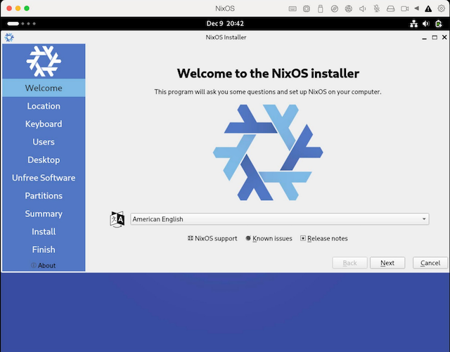
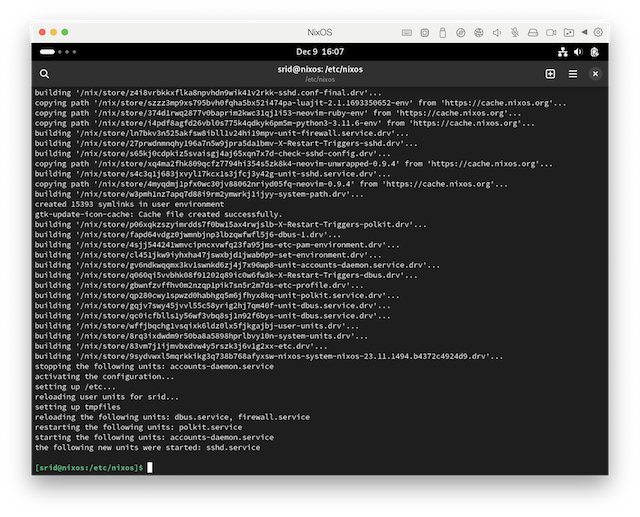
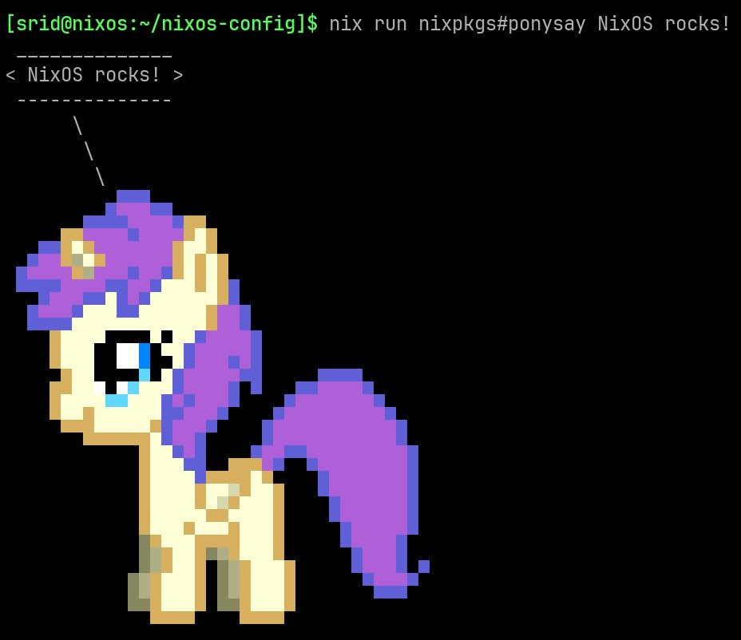

This tutorial will walk you through the steps necessary to install NixOS, enable flakes while tracking the resulting system configuration in a Git repository.
This page is the first in a planned series of tutorials aimed towards onboarding Linux/macOS users into comfortably using NixOS as their primary operating system.
Prepare to install NixOS
- Download the latest NixOS ISO from here. Choose the GNOME (or Plasma) graphical ISO image for the appropriate CPU architecture.
- Create a bootable USB flash drive (instructions here) and boot the computer from it.
NixOS will boot into a graphical environment with the installer already running.

Go through the installation wizard; it is fairly similar to other distros. Once NixOS install is complete, reboot into your new system. You will be greeted with a login screen.
- Login as the user you created with the password you set during installation.
- Then open the “Console” application from the “Activities” menu.
Your first configuration.nix change
Your systems configuration includes everything from partition layout to kernel version to packages to services. It is defined in /etc/nixos/configuration.nix. The /etc/nixos directory looks like this:
$ ls -l /etc/nixos
-rw-r--r-- 1 root root 4001 Dec 9 16:03 configuration.nix
-rw-r--r-- 1 root root 1317 Dec 9 15:43 hardware-configuration.nix
hardware-configuration.nix?
Hardware specific configuration (eg: disk partitions to mount) are defined in /etc/nixos/hardware-configuration.nix which is imported, as a module, by configuration.nix.
All system changes require a change to this configuration.nix. For example, in order to “install” or “uninstall” a package, we would edit this configuration.nix and activate it. Let’s do this now to install the neovim text editor. NixOS includes the nano editor by default:
sudo nano /etc/nixos/configuration.nix
These *.nix files are written in the Nix language.
In the text editor, make the following changes:
-
Add
neovimunderenvironment.systemPackages -
[Optional] uncomment
services.openssh.enable = true;to enable the SSH server
Press
Your configuration.nix should now look like:
# /etc/nixos/configuration.nix
{
...
environment.systemPackages = with pkgs; [
neovim
];
...
services.openssh.enable = true;
...
}
Once the configuration.nix file has been saved to disk, you must activate that new configuration using the nixos-rebuild command:
sudo nixos-rebuild switch
This will take a few minutes to complete―as it will have to fetch neovim and its dependencies from the official binary cache (cache.nixos.org). Once it is done, you should expect to see something like this:

You can confirm that neovim is installed by running which nvim:
$ which nvim
/run/current-system/sw/bin/nvim
Now that you have OpenSSH enabled, you may do the rest of the steps from another machine by ssh’ing to this machine.
Flakeify
configuration.nix to be a flake
A problem with the default NixOS configuration.nix generated by the official installer is that it is not “pure” and thus not reproducible (see here), as it still uses a mutable Nix channel (which is generally discouraged). For this reason (among others), it is recommended to immediately switch to using Flakes for our NixOS configuration. Doing this is pretty simple. Just add a flake.nix file in /etc/nixos:
sudo nvim /etc/nixos/flake.nix
Add the following:
# /etc/nixos/flake.nix
{
inputs = {
# NOTE: Replace "nixos-23.11" with that which is in system.stateVersion of
# configuration.nix. You can also use latter versions if you wish to
# upgrade.
nixpkgs.url = "github:NixOS/nixpkgs/nixos-23.11";
};
outputs = inputs@{ self, nixpkgs, ... }: {
# NOTE: 'nixos' is the default hostname set by the installer
nixosConfigurations.nixos = nixpkgs.lib.nixosSystem {
# NOTE: Change this to aarch64-linux if you are on ARM
system = "x86_64-linux";
modules = [ ./configuration.nix ];
};
};
}
-
Replace
nixos-23.11with the version fromsystem.stateVersionin your/etc/nixos/configuration.nix. If you wish to upgrade right away, you can also use latter versions, or usenixos-unstablefor the bleeding edge. -
x86_64-linuxshould beaarch64-linuxif you are on ARM
Now, /etc/nixos is technically a flake. We can “inspect” this flake using the nix flake show command:
$ nix flake show /etc/nixos
error: experimental Nix feature 'nix-command' is disabled; use '--extra-experimental-features nix-command' to override
Oops, what happened here? As flakes is a so-called “experimental” feature, you must manually enable it. We’ll temporarily enable it for now, and then enable it permanently latter. The --extra-experimental-features flag can be used to enable experimental features. Let’s try again:
$ nix --extra-experimental-features 'nix-command flakes' flake show /etc/nixos
warning: creating lock file '/etc/nixos/flake.lock'
error:
… while updating the lock file of flake 'path:/etc/nixos?lastModified=1702156351&narHash=sha256-km4AQoP/ha066o7tALAzk4tV0HEE%2BNyd9SD%2BkxcoJDY%3D'
error: opening file '/etc/nixos/flake.lock': Permission denied
Progress, but we hit another error—Nix understandably cannot write to root-owned directory (it tries to create the flake.lock file). One way to resolve this is to move the whole configuration to our home directory, which would also prepare the ground for storing it in Git. We will do this in the next section.
flake.lock
Nix commands automatically generate a (or update the) flake.lock file. This file contains the exacted pinned version of the inputs of the flake, which is important for reproducibility.
Move configuration to user directory
Move the entire /etc/nixos directory to your home directory and gain control of it:
$ sudo mv /etc/nixos ~/nixos-config && sudo chown -R $USER ~/nixos-config
Your configuration directory should now look like:
$ ls -l ~/nixos-config/
total 12
-rw-r--r-- 1 srid root 4001 Dec 9 16:03 configuration.nix
-rw-r--r-- 1 srid root 224 Dec 9 16:12 flake.nix
-rw-r--r-- 1 srid root 1317 Dec 9 15:43 hardware-configuration.nix
Now let’s try nix flake show on it, and this time it should work:
$ cd ~/nixos-config
$ nix --extra-experimental-features 'nix-command flakes' flake show
warning: creating lock file '/home/srid/nixos-config/flake.lock'
path:/home/srid/nixos-config?lastModified=1702156518&narHash=sha256-nDtDyzk3fMfABicFuwqWitIkyUUw8BZ4SniPPyJNKjw%3D
└───nixosConfigurations
└───nixos: NixOS configuration
Voila! Incidentally, this flake has a single output, nixosConfigurations.nixos, which is the NixOS configuration itself.
See Rapid Introduction to Nix for more information on flakes.
Once flake-ified, we can use the same command to activate the new configuration but we must additionally pass the --flake flag, viz.:
# The '.' is the path to the flake, which is current directory.
$ sudo nixos-rebuild switch --flake .
If everything went well, you should see something like this:

Excellent, now we have a flake-ified NixOS configuration that is pure and reproducible!
Let’s store our whole configuration in a Git repository.
Store the configuration in Git
First we need to install Git:
-
add
gittoenvironment.systemPackages, and -
activate your new configuration using
sudo nixos-rebuild switch --flake ..
Then, create a Git repository for your configuration:
$ cd ~/nixos-config
$ git config --global user.email "srid@srid.ca"
$ git config --global user.name "Sridhar Ratnakumar"
$ git init && git add . && git commit -m init
You may now create a repository on GitHub or your favourite Git host, and push your configuration repo to it.
-
If you buy a new computer, and would like to reproduce your NixOS setup, all you have to do is clone your configuration repo, adjust your
hardware-configuration.nixand runsudo nixos-rebuild switch --flake .. - Version controlling configuration changes makes it straightforward to point out problems and/or rollback to previous state.
Enable flakes
As a final step, let’s permanently enable Flakes on our system, which is particularly useful if you do a lot of software development. This time, instead of editing configuration.nix again, let’s do it in a separate module (for no particular reasons other than pedagogic purposes). Remember the modules argument to nixosSystem function in our flake.nix? It is a list of modules, so we can add a second module there:
diff --git a/flake.nix b/flake.nix
index cc77fb9..4e84bdf 100644
--- a/flake.nix
+++ b/flake.nix
@@ -8,7 +8,14 @@
# NOTE: 'nixos' is the default hostname
nixosConfigurations.nixos = nixpkgs.lib.nixosSystem {
system = "x86_64-linux";
- modules = [ ./configuration.nix ];
+ modules = [
+ ./configuration.nix
+ {
+ nix = {
+ settings.experimental-features = [ "nix-command" "flakes" ];
+ };
+ }
+ ];
};
};
}
You can see all the available options for NixOS in the NixOS options search engine.
As before, we must activate the new configuration using sudo nixos-rebuild switch --flake .. Once that is done, we can verify that flakes is enabled by re-running nix flake show but without the --extra-experimental-features flag:
$ nix flake show
warning: Git tree '/home/srid/nixos-config' is dirty
git+file:///home/srid/nixos-config
└───nixosConfigurations
└───nixos: NixOS configuration
Recap
You have successfully installed NixOS. The entire system configuration is also stored in a Git repo, and can be reproduced at will during either a reinstallation or a new machine purchase. You can make changes to your configuration, commit them to Git, and push it to GitHub. Additionally we enabled Flakes permanently, which means you can now use all the modern nix commands, such as running a package directly from nixpkgs (same version pinned in flake.lock file):

Up Next
In the next tutorial, we will automate the install process a bit by declaratively specifying our disk partitioning in Nix.